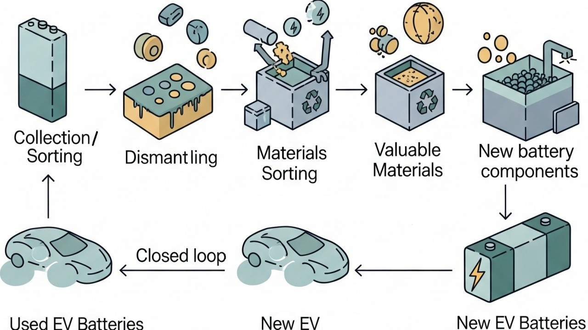

Overview
New Zealand is at an early but pivotal stage in developing its electric vehicle (EV) battery recycling ecosystem. Although most used batteries are currently exported for processing overseas, rapid EV adoption and new government waste-reduction policies are creating strong economic incentives to develop local recycling, refurbishment, and repurposing capacity.
Building a national EV battery recycling framework would not only reduce export dependency but also unlock new economic, industrial, and innovation opportunities for Aotearoa.
Key takeaways
Developing a domestic EV battery recycling and repurposing industry can deliver major economic, environmental, and social dividends for New Zealand.
Growing EV adoption in New Zealand will generate large volumes of end-of-life batteries, creating strong demand for local recycling and repurposing solutions.
Emerging Market Potential
New Zealand's growing EV fleet will soon generate a significant volume of end-of-life (EoL) batteries. These batteries contain valuable materials such as nickel, cobalt, manganese, and lithium that can be recovered and reused domestically.
Maximising material recovery reduces the need for costly imports, lowers production emissions, and helps stabilise the local clean-tech supply chain.
Even a small-scale recycling facility could process hundreds of tonnes annually, delivering both environmental and financial returns.
Local Industry Development
Establishing a domestic recycling and repurposing sector will stimulate new industries and regional investment. Opportunities include:
- Refurbishment facilities for assessing, repairing, and reusing EV battery packs (e.g., early initiatives like infinitEV).
- Second-life applications such as solar and grid-storage solutions that extend battery use by 5–10 years.
- Collaboration with councils, iwi, and businesses to create local collection hubs and logistics networks.
Job Creation and Skills Growth
A national recycling ecosystem would generate demand for specialised roles in:
- Battery diagnostics and disassembly
- Materials recovery and process engineering
Investment and Innovation Opportunities
The transition to circular energy systems presents opportunities for public-private investment.
- Infrastructure investment: Regional recycling plants, testing centres, and repurposing facilities.
- Innovation funding: Automation, robotic dismantling, and AI-based diagnostics to improve efficiency and safety.
- Cross-border collaboration: Working with established international recyclers to bring best-practice technology to Aotearoa.
Prioritise government support for regional hubs and partnerships with offshore recyclers to close the infrastructure gap.
